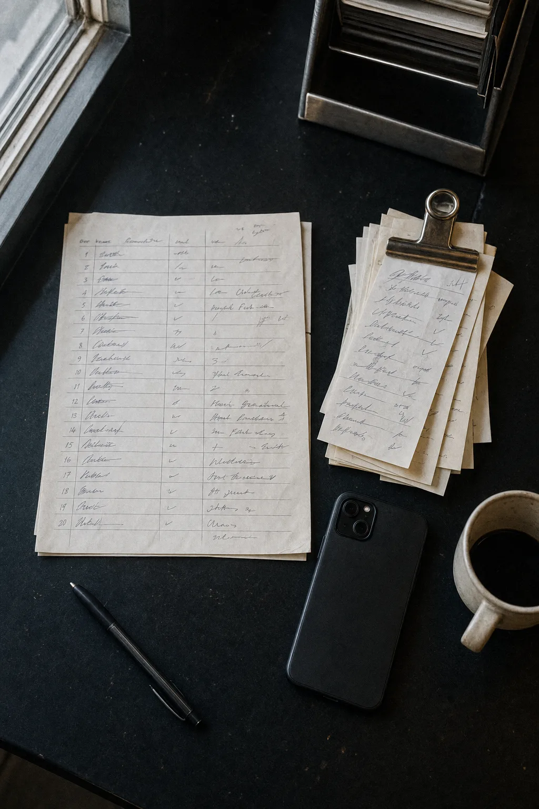
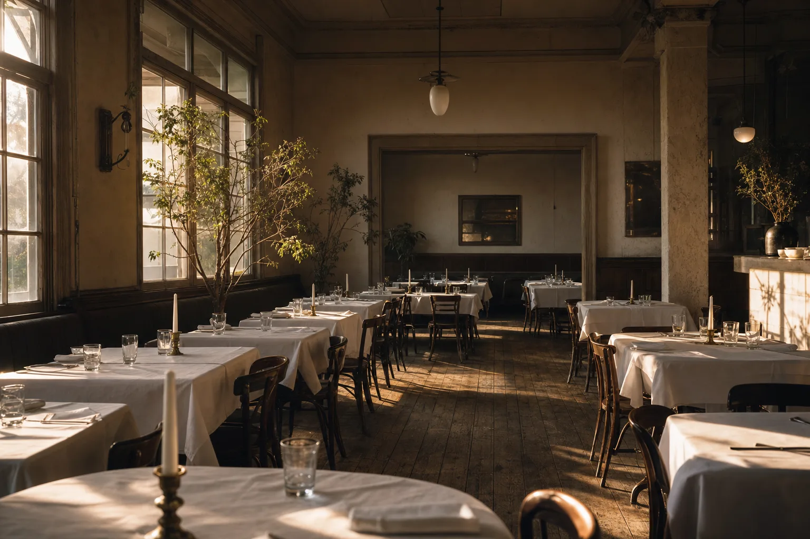
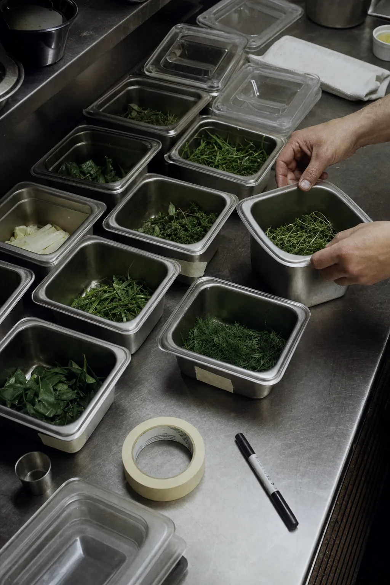
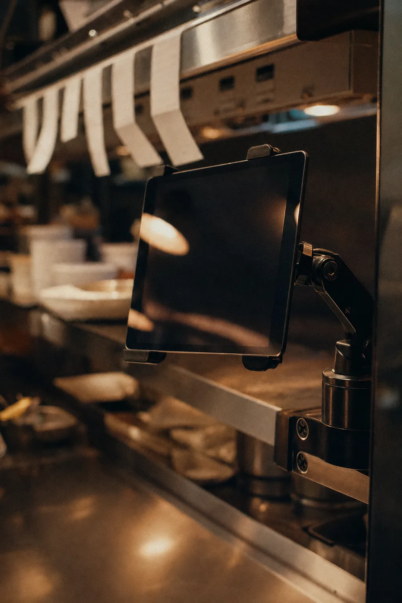
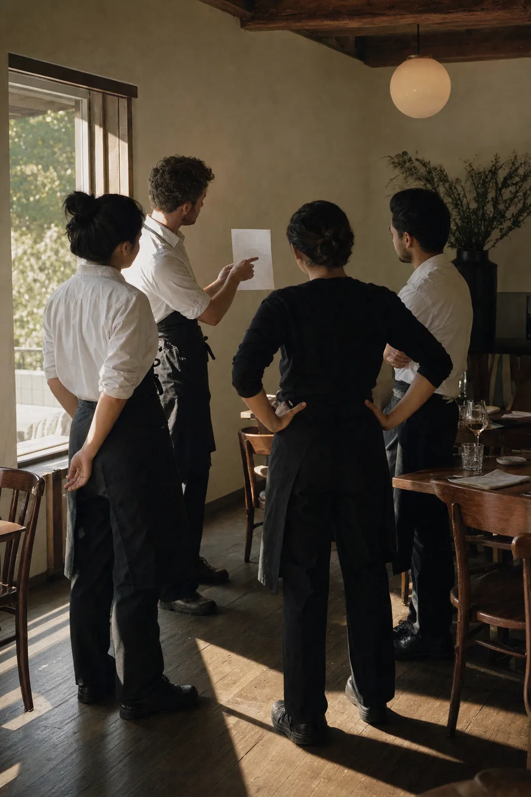
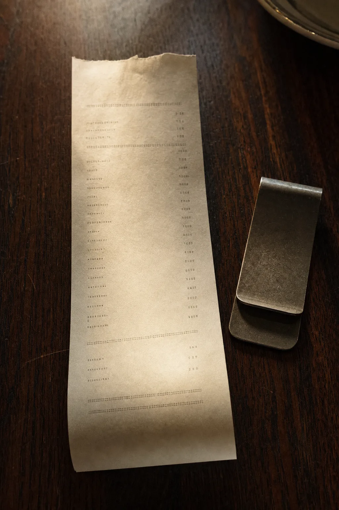

ANTES DE ABRIR
Así te elige alguien que no te conoce.
01Alguien busca dónde comer a seis cuadras de tu local. Abre tu carta y es un PDF de hace dos años que hay que agrandar con dos dedos. El plato que mejor te sale no tiene foto. Cierra y abre el del lado.
02Tienes cuatrocientas reseñas y nadie las leyó enteras. Ahí está escrito cuántas veces alguien esperó cuarenta minutos, con la fecha y la mesa.
03El alquiler y el personal cuestan lo mismo a las cuatro de la tarde de un martes que un viernes a las nueve. Esa franja la pagas todas las semanas.
- LA CARTA EN EL TELÉFONOuna página por plato
Un plato por página, con su foto, su precio, sus ingredientes y sus alérgenos. En los idiomas que haga falta.
- LAS RESEÑAS, ENTERASun informe por tema
Cuatrocientas reseñas ordenadas por tema: comida, servicio, demora, precio, ambiente. Si treinta personas escribieron que esperaron, salen las treinta citas.
- LAS HORAS QUE PAGAS IGUALacciones por franja
El martes a las cuatro cuesta lo mismo que el viernes a las nueve. De tus ventas sale qué franjas están flojas, y de la cuadra sale qué hay alrededor: oficinas, un hotel, un gimnasio.

LO QUE SE IMPLEMENTA
Ocho piezas que ya sabemos que sirven en un local.
Están escritas acá antes de la llamada. Ahí se decide cuáles van primero en tu local y cuáles no hacen falta.
01CRM
Quién reservó, cuándo vino, qué pidió y cuánto hace que no vuelve. Cada cliente con su historial, en un solo lugar.

02Tu base de datos, ordenada
El que reservó por teléfono, el que pidió delivery y el que dejó el mail para el cumpleaños terminan hoy en tres lugares distintos. Se unifican en una lista.
03Carta en video
Video y foto por plato, con precio, ingredientes y alérgenos, en los idiomas que haga falta. Una página por plato, que además es lo que encuentra un buscador.
04Landing propia y editable
El sitio del local con la carta conectada y la reserva a un clic. Lo actualizan ustedes, sin llamar a nadie.
05Newsletter propio
Tu lista para avisar del menú nuevo o de una noche especial. Sin pagar alcance y sin depender de que una red te muestre.
06Chatbot que atiende y califica
Contesta horarios, reservas, alérgenos y cómo llegar, a cualquier hora y en varios idiomas. Lo que no puede resolver, lo deriva con el dato ya tomado.
07Lectura de reseñas
Tus reseñas ordenadas por tema: comida, servicio, demora, precio, ambiente. Si treinta personas escribieron que esperaron, salen las treinta citas con su fecha.
08Las horas que pagas igual
Qué franjas están flojas según tus ventas, y qué hay a tres cuadras: el turno de una oficina, la salida de un gimnasio.
Nada de esto es una plataforma nuestra. Se monta sobre herramientas que ya existen, queda a tu nombre y con tus accesos.
LA AUDITORÍA
Cuestionario, media hora de llamada y el mapa de tu local.
- 1
Pagas la auditoría
USD 50, una sola vez. El mismo precio para los siete rubros.
- 2
Contestas el cuestionario
De 15 a 25 minutos, guiado. Preguntas sobre tu local.
- 3
Media hora de llamada
Mano a mano, con una persona. Se mira qué se puede implementar en tu local y en qué orden.
- 4
Te queda el mapa
Qué conviene hacer ahora, qué después y qué no hace falta, con el porqué de cada punto.
LA COMANDA
Qué miramos, escrito como se escribe en cocina.
Vienes por la carta y de paso miramos las siete áreas. Si lo que más te conviene arreglar es otra cosa, sale en el mapa y te lo decimos.
MESA 1 · OPERACIÓN
- VENTAS: Reservas, delivery, clientes que vuelven y clientes que no vuelven más.
- OPERACIONES: Lo que se anota a mano todos los días, compras y turnos.
- DATOS: Qué franjas están flojas según tus ventas hora por hora, día por día.
- MARKETING: La carta en internet, las fotos, las redes y lo que se ve al buscarte.
Sale primero
MESA 2 · CRECIMIENTO
- ATENCIÓN: Reservas y consultas por WhatsApp en plena hora de servicio.
- EQUIPO: Qué podría hacer el equipo con herramientas que hoy no usa.
- SOFTWARE: Punto de venta, reservas, planillas y qué está desconectado.
Sale después

Puesto, vacío, y ya pagado. Todo lo que decide si se llena pasó antes.
CUATRO TIEMPOS
Cuatro pasos, siempre en este orden.
Automatizar un proceso desordenado lo vuelve más rápido y sigue estando desordenado. Por eso se ordena primero.
- 01
Auditamos
Miramos cómo funciona el local hoy, área por área. No la impresión: los datos.

02Optimizamos
Se ordena el proceso antes de automatizarlo. Automatizar algo malo lo hace más rápido, no mejor.

03Automatizamos
Solo lo que tiene sentido automatizar en tu local, no lo que está de moda.

04Capacitamos
Tu equipo queda sabiendo operarlo. Si no, en tres meses no lo usa nadie.

EL TICKET
Primero miramos. Después se decide.
EL AUDIT
- Cuestionario guiado de 15 a 25 minutos
- Las siete áreas, más lo propio del rubro
- Mapa de lo que conviene hacer ahora y después
- El porqué de cada punto, con tu respuesta al lado
- Lo revisa una persona antes de que llegue
- Media hora de llamada, mano a mano
USD 50,00
Lo que cueste implementar sale en el mapa, con el alcance de cada cosa al lado.
PREP LIST
Lo que suelen preguntar antes de empezar.
Ya tengo Instagram.
Instagram te muestra a quien ya te sigue. Esto aparece cuando alguien busca dónde comer cerca y abre tu carta desde el buscador.
Las reseñas las respondo yo.
Bien. Esto lee las cuatrocientas juntas y te dice cuántas hablan de la demora, con la cita y la fecha de cada una.
Los descuentos me arruinan el margen.
De acuerdo. Las acciones salen para una franja concreta y para lo que hay a tres cuadras: el turno de una oficina, la salida de un gimnasio.
Ya pago un sistema.
Este no reemplaza tu punto de venta ni tu sistema de reservas.